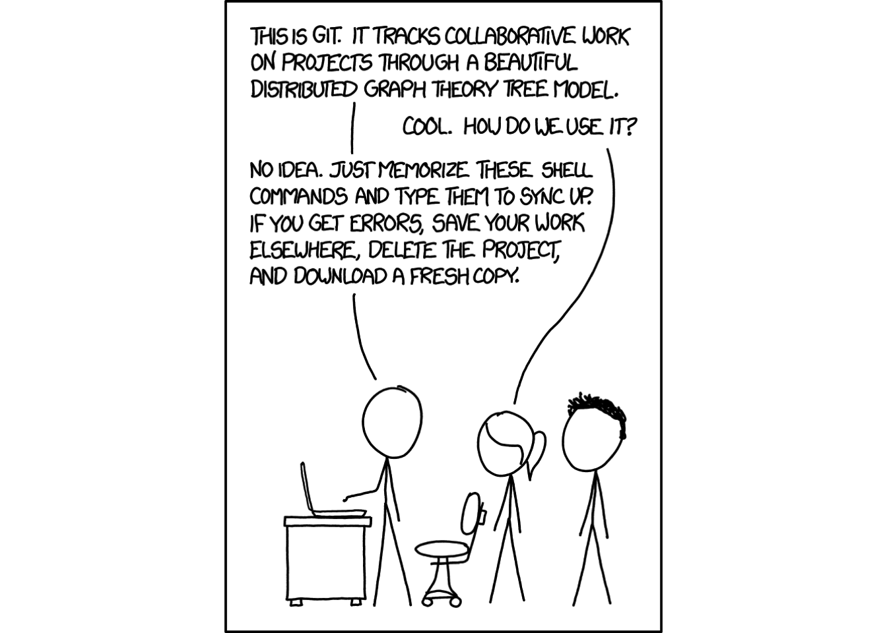
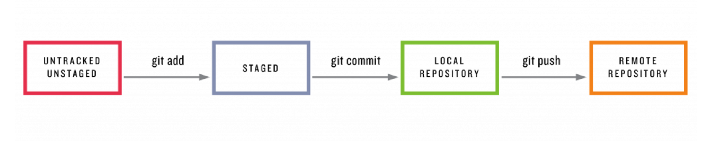
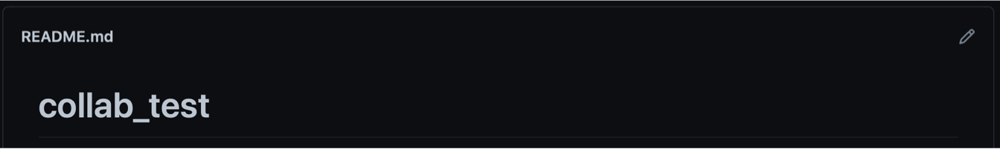
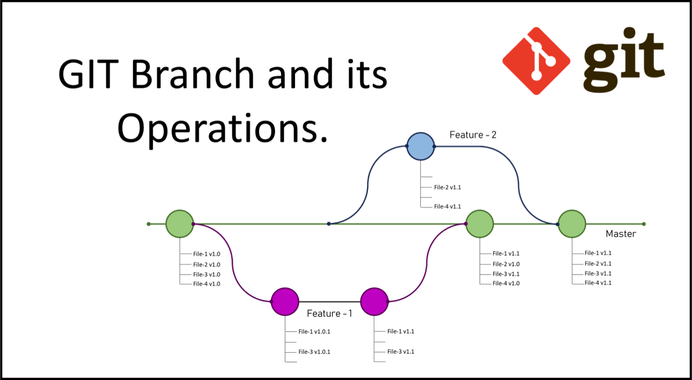
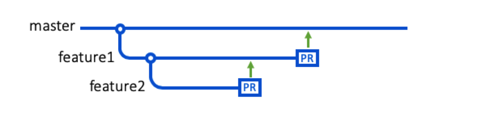
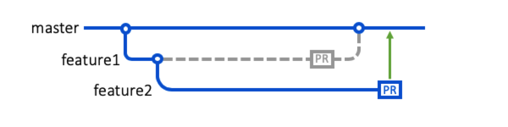

Linking R and GitHub: part 1
git
git is a version control system designed by the developers of the Linux kernel. It is primarily used to manage the development of source code, but can easily be used to manage any set of files. It is free to use and install and is particularly useful when managing files for collaborative work, including:
- version control to avoid overwriting new code with old
- version storage to find older modifications
- tracking for issues and bugs
- commenting system to make it clear(ish) what changes have been made and why
The whole system works through repositories: a set of files dedicated to a given project. This is not restricted to R files, and can be used with most computer languages, documents and files. Repositories can be stored on your own computer (local) or hosted on a server (remote). In practice, most people use a combination of these, with your files being changed locally, then committed to the remote hosting service.
We’re going to use the command line to start working with git, as it is the best way to get a feel for what is going on. If you start to use git more routinely, there are several excellent GUIs that will make your life easier (GitHub has a neat desktop application). The examples used here are based on the information available at happygitwithr. This website has much more extensive instructions on the use of git and R (and git on its own), and is a great place to follow up.
GitHub
GitHub is one of several online hosting sites, that provide cloud-based storage for your git repositories (other options include GitLab and Bitbucket). This (and git) now integrate quite seamlessly with R, and particularly with RStudio, and we’ll go through the steps of setting up R and GitHub to play nicely together.
The overall setup scheme is as follows:
- Create an account at GitHub
- Make sure R/RStudio is up-to-date
- Install git
- Link git to your account
- Connect R to git and GitHub
We’ll tackle the first 4 of these in this lab, and go through some basics of working with git on the command line. In the next lab we’ll look at working with GitHub through RStudio, and finally look at ways that you can collaborate on projects through GitHub.
Setting up a GitHub account
Go to this site: https://github.com and follow the instructions. Choose your username wisely - remember that this is way that potential employers can see your work!
Update R and RStudio
Go to
- http://cran.r-project.org for R
- https://www.rstudio.com for RStudio
Install git
git is the underlying software that manages the repositories, keeps files current and copies and sends files between computers, so we need to install this first so that R can use it.
Windows
The easiest way to install git is using Git for windows. This is a self contained installer; download it, run it and accept the default settings (although feel free to switch to a more modern text editor than vim).
Mac OSX
The easiest way to install git on a Mac is by installing the XCode command line tools. Open a terminal and enter the following command to do so:
xcode-select --installThis can take a little time, but when finished will provide you with a wide range of useful tools for programming.
Linux
Use your favorite package manager to install git directly.
Ubuntu or Debian Linux:
sudo apt-get install gitFedora or RedHat Linux:
sudo yum install gitYou can also get the latest version of git here.
Setting up git
Once the installation is complete, open a terminal to check that git is working. There are several options to access a terminal, but an easy one is to use the terminal in RStudio. Open RStudio, then go to [Tools] > [Terminal] > [New Terminal], and you should get a new tab in the console panel. Go to this, and type the following to check that git is working:
which gitand
git --versionIf this doesn’t work, open [Tools] > [Global options]. Select the Terminal from the left hand side, and look at the drop down list titled [Open new terminal with..]. If there is an open for git bash, select this and try again.
On Mac or Linux, you can also use a regular terminal, as long as it is running bash or zsh. On Windows, you can access Git Bash from the Start menu, which will open a terminal (don’t try to use the PowerShell for this).
If this works, the next steps are to tell git your name and email address. The email address should be the address that you registered with GitHub, but the name can be your real name. Type the following in your terminal:
git config --global user.name 'Grumpy Git'
git config --global user.email 'grumpyoldgit@example.com'To check that this has been correctly entered:
git config --global --listConnect to GitHub
In this section, we will walk through the steps of connecting to GitHub for the first time, and both pulling from and pushing to GitHub from your computer. Before doing anything else, make a new folder on your computer where you can store the files for these labs. I’d suggest making this on your desktop and calling it rgithub. Make a note of where this is, and then go to your terminal and change to this directory. Note that in a terminal:
pwdprints the current directorycdchanges the directorycdwill go to your home directorycd ..will go up one levelcd /path/to/my/fileswill change to whatever path you have listed
lswill print a list of the files in the current directory
Under Windows, you can change to a desktop folder by typing:
cd /c/User/USERNAME/Desktop/rgithubUnder Mac OSX, you can change to a desktop folder by typing:
cd /Users/USERNAME/Desktop/rgithubUnder Linux:
cd /home/USERNAME/Desktop/rgithubMake a repo on GitHub
Go to https://github.com and make sure you are logged in to your account. Click on [Repositories], then click the green [New] button.
This will open a form with several options. Enter the following:
- Repository name:
myrepo(or whatever name you will easily remember). - Description: “
setup test” (or something else, but it is good to get into practice of writing something descriptive in the README). - Public.
YES - Initialize this repository with a README. This is a key option for linking to R
- For everything else, just accept the default.
Click button [Create repository.]
This has created the remote copy of your repository. We now need to link this to a local copy on your computer. Click the green button [Code], and copy the HTTPS URL (if you click on the little clipboard icon this will get copied to your clipboard).
Once you have changed directory to where you want the local files saved, make a clone of your repository by typing the following into the terminal:
git clone https://github.com/USERNAME/REPOSITORY.gitReplace the https:// address with the URL copied from GitHub. git will now make a new directory with the name of your repository and copy all files from GitHub to this directory. You should see something similar to the following output if this has been successful:
Cloning into 'myrepo'...
remote: Enumerating objects: 3, done.
remote: Counting objects: 100% (3/3), done.
remote: Total 3 (delta 0), reused 0 (delta 0), pack-reused 0
Receiving objects: 100% (3/3), done.This will create a new folder with the name of the repository (myrepo). Change directory now and take a look at its contents.
cd myrepo
ls
head README.mdThe head command will show you the first few lines of the README file. This is a markdown file and is used as the default landing page for your repository. Although we’ve just downloaded this, so know where it is linked to, we can check the address of the remote repository as follows:
git remote show originAnother very useful command is git status, which provides a summary of the current repository, including
- Which branch you are working on (more on this later)
- Whether or not files are being tracked (i.e. monitored for changes by git)
- Whether files are in sync with the remote repository
Make a local change, commit, and push
We will make a simple change to the READ.md file, and then check to see if we can push this to GitHub. You can open this file with a text editor, or run the following command line to insert some new text.
echo "This is my exciting first GitHub repo. Whoo." >> README.mdIf you want to check that git has seen this change, type the following at the command line
git statusAnd this should tell you that one file (README.md) has been modified, but that it is not staged.
modified: README.mdNow let’s push this change to git. This is done in three parts.

- First we stage the changes. This creates the package of modifications we have made. In this case, this includes adding the new file with
git add - Second, we create a commit. This updates your local repository with the package of changes, along with a brief description of the modifications you made.
- Finally, we push this to the remote repository on GitHub.
git add -A
git commit -m "My first commit"
git pushThe description of changes is a key part of the way git works, and you will not be allowed to push changes without this. The goal here is to make the description brief but informative, and in turn the commits you make should be relatively small increments each time. Remember that the goal of these comments is to allow collaborators and other users to understand what is going on and how this is affecting the code.
Depending on your operating system, this might open a browser page for GitHub’s credential manager, which can be used to store your login details. Here, you need to click the green button [Authorize GitCredentialManager], then enter your password. This may not work in certain browsers (e.g. Windows Edge). If the button is grayed out and you can’t click it, close the browser and stop the push command (press Ctrl-C in the terminal). Now set you default browser to something else (e.g. Chrome) and try and run the git push command again.
If this has worked, you should see some output similar to this:
Enumerating objects: 5, done.
Counting objects: 100% (5/5), done.
Delta compression using up to 8 threads.
Compressing objects: 100% (2/2), done.
Writing objects: 100% (3/3), 311 bytes | 0 bytes/s, done.
Total 3 (delta 0), reused 0 (delta 0), pack-reused 0
To https://github.com/grumpy-old-git/myrepo.git
b4112c5..de669ba main -> mainConfirm the commit
Now let’s check to see if the local change propagated to the GitHub repository. Go back to your GitHub page and refresh the repository page. You should now see the new line in the README file.
While the README file is automatically shown when you access the directory, you can also look at the content of any other file you have added to the repository. Click on the name of the repository (myrepo), at the top of the page, then click on the name of any file (there will probably only be the README file for now). If the file is a text file, the content will be displayed in the window. This window allows you to track past changes in the file by clicking on the ‘History’ link on the right hand side. For now, this will just show the initial commit when the repository was made, and the update to the README file. At the far right hand side of this page is a small icon that looks like this <> for each commit. Clicking this will show you the content of the file following the commit, which allows you to track the changes made by yourself (and others).
You can also see the local copy of your commits, by typing git log in the terminal to print out the author, date and comment for each one.
Pulling changes from GitHub
If there have been any changes to the remote repository, we need to update the local one to reflect these. To do this, we need to git’s pull function. To demonstrate how this works, first go to your remote repository on GitHub. Scroll down to where the contents of the README.md file are shown, and click on the pencil icon in the top right to edit this.

Enter some text and then scroll down and click [Commit changes]. Go back to the main repository page and check that the new text is visible. No go back to your terminal and type
git pullAnd your changes will be downloaded from the server. In the output from the command there should be a brief description of the changes:
Fast-forward
README.md | 2 +-
1 file changed, 1 insertion(+), 1 deletion(-)Note that if there are no changes, running git pull simply stop with the message Already up to date, and not modify anything. As a result, there’s little risk in running this command, and it’s good practice to pull every time that you start working on a repository, particularly if these are collaborative.
Whether you haven’t opened RStudio in a month or you’ve just been away for a lunch break, pull. It might not be necessary, but it can save a lot of heartache later.
Adding files
Next, we’ll add a file to the local repository and push this to GitHub. The example here uses a Netlogo model (randomWalk4.nlogo), but you can upload any file. Note that GitHub limits the size of the files you can upload to 100Mb, so it’s best to choose a small file for this. Copy the file to your local repository (e.g. Desktop/rgithub/myrepo). Once it is there, go back to the terminal and enter git status to check that git has seen the new file. It should tell you that you have an untracked file in the repository. This simply means that git has found the file, but is not tracking it as part of the repository. To fix this, we need to add the file:
git add randomWalk4.nlogo
git statusYou can also check the list of tracked files with git ls-files. The file will now be marked as a new file, and will be added the next time you make a commit. So let’s do that now.
git commit -m "Added model code"
git pushIf you want to add several files, then running git add . will add everything in the directory that is currently untracked, or you can use wildcards git add '*.R'. There may be files that you do not want to commit to GitHub, either because these are too large or because these include sensitive information. You can exclude these by adding them to a file called .gitignore. First check if this already exists in your repository
ls -aIf it doesn’t, you can create it using the Unix touch command:
touch .gitignoreAs an example, we’ll now make a copy of the file that you just pushed to your repository (the new name doesn’t matter)
cp randomWalk4.nlogo allMySecrets.txt
git statusWhich lists the new file. Add this to the .gitignore file
echo allMySecrets.txt >> .gitignore
git statusAnd this has now been dropped from the list of untracked files.
Working with branches in git
Branches allow you to make parallel copies of your code for development. This is particularly useful as your code starts to become more mature or if you are collaborating on a project. For example, you can have one branch that contains the current stable, working version, and a second for development. As any changes to the development branch do not affect the working version, then you can safely experiment with your code. If these changes improve the stable version, you can then merge them back to that original branch. If they do not, then you can simply delete the new, development branch. Many larger projects use at least three branches: a main, stable version, a version for active development and a third for trying out experimental features.
These are equally useful for collaborative projects (we’ll look at these more in the last session). In a collaborative project, one person might be trying to add feature A, and someone else feature B. By organizing the code into branches, you can have the stable branch that no-one changes, and two additional branches for feature A and B respectively.
When you initialize a git repository, this is created with a single default branch, called main (previously this was called master). This branch is the one that is shown whenever anyone visits your repository, and is the initial branch that you get when you clone a repository. In general, you should consider this as the official, stable version of your project, and this should not be used for active development.
Do not mess with the main. If you make changes to the main branch of a group project while other people are also working on it, your on-the-fly changes will ripple out to affect everyone else and very quickly there will be merge conflicts, weeping, rending of garments, and plagues of locusts. It’s that serious. Unless you specify a different branch, the main branch in a repository is the base branch for new pull requests and code commits.1
git manages branches through a system of checkouts that create new branches and switches between them, and pull requests that propose a set of changes from a child branch to a parent branch. Once the pull request has been accepted and the merge has taken place, then the child branch is usually deleted.
In this example, a default repository (master) has been established (green line). Two branches are then checked out, each set up to work on a single new feature (feature1, feature2). When feature 1 is complete, this is merged back to the master branch, through a pull request, followed by a second merge for feature 2.

Note that it is also possible to checkout from a child branch. For example, you may have a child branch that contains working version of a new feature but you want to test a more different setup or more efficient version of this. YOu can then checkout a child of the existing child branch (a grandchild?). You can now test if it is worth this in your new working branch before merging this back to the production (main) branch. This does not affect the working version, and doesn’t mess with the main branch.
In this example, a second branch is checked out from feature1, then merged back prior to the intermediate branch. The subsequent merge of this with the main branch will include all changes.

If the intermediate branch is merged back and deleted, the lower level branch will be automatically re-assigned to the next higher level branch

Working with branches from the terminal
In this section, we’re going to look briefly at how to work with branches through the terminal (in case you want to work with non-R files). If your terminal is not already open, open it now and change to your myrepo repository. For example:
cd /Users/username/Desktop/github/myrepoYou can get a list of current branches through the terminal by typing git branch -a. If you try this for your existing repository, you should see something like the following, indicating that only the main branch exists.
* main
remotes/origin/HEAD -> origin/main
remotes/origin/mainWe are now going to make a new branch of this repository. I’m going to call it devel to represent a development branch, but feel free to use a different/more amusing name. To create this, simply type:
git checkout -b develAs long as there is no existing branch with this name, you should see the following message:
Switched to a new branch 'devel'You can also use git checkout to switch between branches. To go back to the main branch:
git checkout mainAnd to switch back to the new branch:
git checkout develIf you now run git branch -a, you should see the following output (or close to it):
* devel
main
remotes/origin/HEAD -> origin/main
remotes/origin/mainThe * represent a pointer and indicates the current working repository. Make sure that this is pointing to your new branch, and then let’s add a file
touch myLittlePonyScript.txtThis will just create a blank text file in your repository (sorry - the real script is a secret). If you run git status, it should list this file as an untracked change. Let’s now add it to the branch and commit:
git add myLittlePonyScript.txt
git commit -m "Added example text file"To demonstrate that this has not affected your main branch, first get the list of files from the new branch
git ls-filesNow change to the main branch, and list the associated files
git checkout main
git ls-filesAnd you should not see the new file listed. You can also at this point add some text to the new file. Note that you need to change back to the new branch to do this:
git checkout devel
echo "Once upon a time in the land of Equestria..." >> myLittlePonyScript.txtThen stage and commit this change:
git add myLittlePonyScript.txt
git commit -m "Added introduction..."Once you have finished making all the changes, we can merge this back to the main branch. Remember that this would usually be done when you have checked and tested any changes you’ve made, and your code is production ready. If it is not, it is better to keep it on the working or development branch.
In order to merge, you need to be on the branch you want to merge to. In this example, that means moving back to the main branch (run the git branch command just to check you are in the right place:
git checkout main
git branchIf you are sure you are in the right place, we can now merge the devel branch using git merge. For this we need to specify the branch we want to use. We also include the --no-ff argument to copy over all the previous commits from this branch. Run the following command in the terminal
git merge devel --no-ffYou will be asked to add a commit message to describe the merged changes, so do this. When you quit the text editor, you should see something similar to the following output if successful:
Merge made by the 'recursive strategy'.
myLittlePonyScript.txt | 1 +
1 file changed, 1 insertion(+)
create model 100644 myLittlePonyScript.txtFinally, we need to push the changes to GitHub:
git pushOnce you see the confirmation notice, go to your GitHub page and check that the changes are visible there. If everything has worked, you can now delete your devel branch:
git branch -d develUsing branches with GitHub
In the previous example, the devel branch that we created was entirely held locally (we only pushed the final changes to GitHub). If you want to create a remote copy of your new branch, then you need to run git push -u origin NEWBRANCH after it has been made. For example:
git branch -b devel
git push -u origin develYou can now store your local commits to the devel branch by pushing these to GitHub. You can also control the merge through a pull request on GitHub (we’ll look at how to do this in the next session). Note that if you do this, you will need to delete both the remote and local copy of the branch when you are finished. The remote one can be deleted by going to your GitHub repository, clicking on the branches link:
Then clicking on the little red trash can icon next to the branch name. You can now delete the local copy through the command line (the second line here just cleans up the links between your local and remote copy)
git branch -d devel
git fetch --pruneCloning a repository
In this section, we’ll look at how you can clone the code from someone else’s repository. This will make your own copy of the code that you can then go ahead and modify for your own use. Note that this copy is then independent of the source repository, and any changes you make will only apply to your copy, not to the original source. This is mainly used if you want to copy some code for your own purposes, and not collaborate on code development.
For this part of the lab, you’ll need to work in pairs or a small group. Using the instructions from this lab, each person should:
- Make a new repository on GitHub. Make sure this has a different name to that of your working partner
- Clone your repository onto your computer
- Update your README with a message for your working partner. This doesn’t have to be polite, but at least try to use good grammar.
- Add a file to your local repository and use the add/commit process to push it to GitHub
Once you have done this, clone your partner’s repository onto your computer. To do this:
- Go your partner’s GitHub page and find the correct repository.
- Click on the green [Code] button and copy the link
- Go to your terminal and type
cd ..to change to the higher level directory - Clone the repo:
git clone https://github.com/NAME/REPOSITORY.git(but replace the https link with the link that you copied)
If you have got to this point, you now have a successfully working git installation. In the next lab we will look at how to integrate this with R/RStudio.
Deleting GitHub repositories
We’ll be making quite a few example repositories in these labs. If you would like to delete any git repository, you will need to both delete the local copy and the one hosted by GitHub. The local copy can be deleted like any normal folder on your computer. The remote copy can be deleted by going to the repository page on GitHub, clicking on [Settings], scrolling all the way down to the Danger Zone, and selecting [Delete this repository]. You will be asked to confirm this at least once, so do and your repository will be removed.
Footnotes
https://thenewstack.io/dont-mess-with-the-master-working-with-branches-in-git-and-github/↩︎